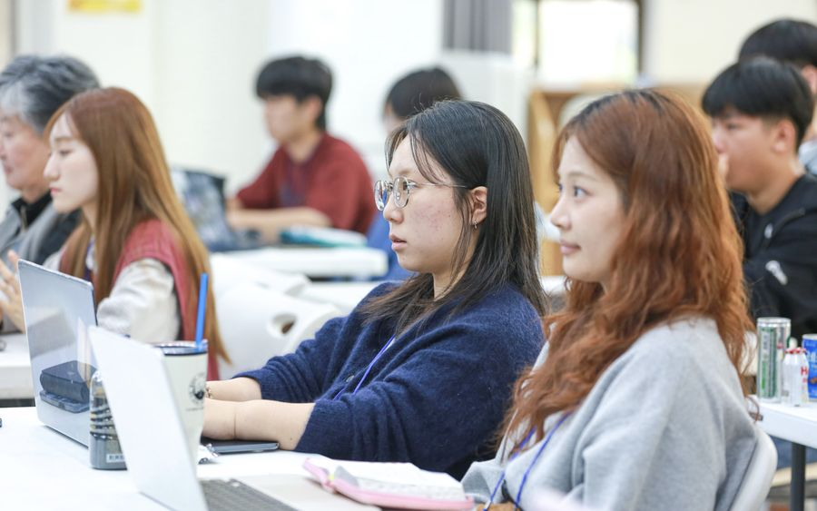
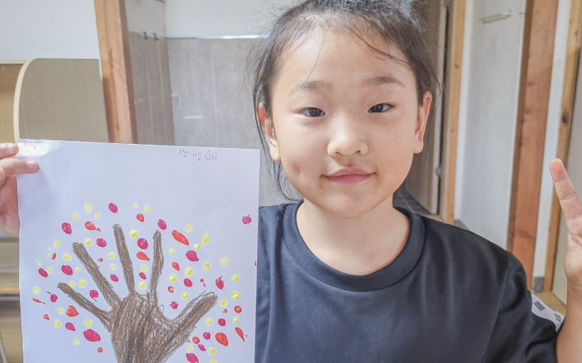
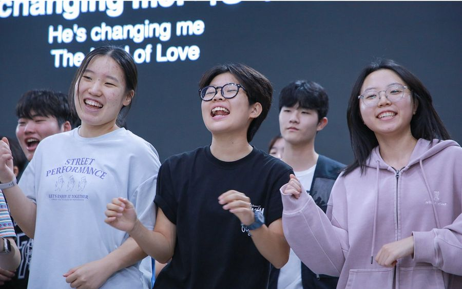

홈 › 소개 › 캠프 대표 프로그램
캠프 대표 프로그램
AKC 캠프를 이루는 세 가지 시그니처입니다.
AKC의 3가지 시그니처

슈치 (스마트처치)
신앙 안에서 일상을 나누고 소통할 수 있는 크리스천 SNS로, 세상의 콘텐츠에 쉽게 노출되는 다음세대를 지켜 주며 캠프 후에도 신앙의 문화 안에 있도록 도와줍니다.

컬처 리빌딩
부스 활동, 팀빌딩, 미션 수행, 레크레이션, 복음 방탈출까지 팀이 함께 협력하며 완수해 가는 활동입니다. 세상의 문화를 그대로 따라가는 대신, 복음 안에서 안전하게 어울리고 협력하는 법을 몸으로 배우며 그 속에 담긴 하나님의 메시지를 함께 발견합니다.

뜨거운 집회 REBUILD NIGHT
뜨거운 예배와 찬양 속에서 은혜를 경험하고, 삶의 방향과 비전이 새롭게 세워지는 시간입니다. 다음세대가 다시 살아나기를 원하는 마음이 이 집회 가운데 고스란히 담겨 있습니다.
캠프의 은혜를 일상으로 잇는 스마트처치
캠프는 3일이지만, 신앙은 매일입니다. AKC의 스마트처치는 syuchi(슈치) 앱으로 함께합니다. 캠프에서 나눈 조가 앱 안에서 그대로 이어지고, 캠프가 끝나도 같은 앱에서 묵상과 기도를 이어 갑니다.
삶의 예배
말씀을 읽고 묵상을 적어 하루를 정리합니다. 쓴 묵상을 목회자나 공동체에 열어 두면, 읽은 사람이 코멘트를 남깁니다.
기도제목과 기도 릴레이
기도제목을 올리면 함께 기도합니다. 릴레이는 시간을 나눠 맡아 이어서 기도하는 방식입니다.
소그룹
조마다 명단과 게시판이 있습니다. 캠프 때 나눈 조는 캠프가 끝난 뒤 남길 수도, 정리할 수도 있습니다.
챌린지
함께하는 습관 챌린지에 참여합니다. 캠프에서는 조별 빙고로 함께합니다.
게시판
우리 교회 게시판과 syuchi 광장이 함께 있습니다. 광장에서는 실명 대신 정한 아이디로 보입니다.
설치 없이 바로
브라우저에서 바로 씁니다. 홈 화면에 추가하면 앱처럼 열리고, 신호가 약한 곳에서도 열립니다.
학부모께
청소년이 쓰는 앱이라 이것부터 정해 두었습니다.
- 만 14세 미만은 보호자 동의를 받습니다동의가 확인되기 전에는 글을 쓸 수 없습니다. 읽는 것은 됩니다.
- 공개된 곳에서는 실명을 쓰지 않습니다실명 대신 정한 아이디로 보입니다. 실명 · 학교 이름 · 교회 이름을 쓰지 말라고 그 자리에서 안내합니다.
- 신고할 수 있습니다글 · 댓글 · 기도제목 · 사용자를 신고할 수 있고, 소그룹 리더는 글을 내릴 수 있습니다.
하나님나라의 문화를 REBUILD!
컬처 리빌딩은 ‘문화를 다시 세우다’라는 뜻으로, 캠프 주제 REBUILD와 이어지는 활동입니다. 게임과 노래방 같은 또래 문화를 그대로 따라가는 대신, 복음이라는 안전한 울타리 안에서 함께 협력하고 활동하며 각 활동 속에 숨겨진 복음의 메시지를 발견합니다.
- 부스 활동
- 팀빌딩
- 미션 수행
- 레크레이션
- 복음 방탈출
팀 대항 미션 레이스
팀별로 미션을 수행해 점수를 모읍니다. 정해진 시간 안에 가장 높은 점수를 얻은 팀이 우승합니다.
슈치 미션 · 부스 미션
슈치 앱으로 받은 미션은 팀이 스스로 수행하고, 부스 미션은 스태프가 진행하는 스테이션에서 함께 풉니다.
말씀 퍼즐
미션을 마칠 때마다 말씀 구절 퍼즐 조각을 얻습니다. 저녁 REBUILD NIGHT에서 팀별로 모은 조각을 맞춰 하나의 말씀을 완성합니다.
| 시간 | 둘째 날 오전 10시 ~ 오후 3시 |
|---|---|
| 진행 | 5 · 6 · 7차 모두 같은 구성으로 진행합니다 |